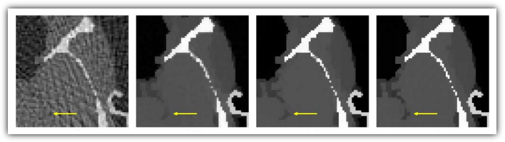

Wednesday, August 17th, 2011 11:18pm
这周参加的 workshop 今天终于出现了一个非常有意思的 talk，讲演者是 UCSD 放射肿瘤学系教授 Steve Jiang。这篇文章的题目来自于芝加哥大学放射诊断学系教授 Xiaochuan Pan 的一篇论文（见附注）。
问题一目了然：近二十年来，X 光断层扫描成像技术在学术界的进展一日千里。但是今天医学实践中主流应用的还是二十五年前的 Filtered Back Projection 方法。翻开任何一篇今天关于断层扫描的论文，都能看到现代方法的结果比 FBP 方法好了不知道多少倍（我自己也写过这个领域的论文，确是如此，下图从左到右反映了不同年代的技术，而医疗上至今仍然在应用最左边的技术）。但是学术界的成果完全没有在业界反映出来。这是为什么呢？

这个问题的重要性可以通过下面的数据看出来。以美国为例，医疗放射剂量差不多占了于美国人身体所承受的全部辐射的三分之一，每年 CT 放射超过六千万人次（在中国这个数字当然更高）。另一方面，所有的现代 CT 研究都号称能够大幅降低对人体的辐射伤害。但是，今天去医院，我们遇到的仍然是高辐射低质量的过时技术，并且短期内看起来会一直是这样。这不仅是一个学术问题，而且是一个公共卫生安全问题。
Jiang 对此的回答是这是研究体系之间的矛盾所导致的。CT 技术的进展主要体现为数学工具的飞跃，而临床医生不懂数学，也看不懂数学论文，更不容易找到容易交流的数学家讨论。应用数学家满足于在刊物上发表论文（二十年间这个领域的论文何止千万），却不关心临床上存在的实际问题。即使双方偶有交流，也停留在个案上，完全不足以推动产业的改变。
从我自己的经验来看，这是相当切中肯綮的评论。从数学家的角度来看，一方面，甚至直到今天为止，很多数学家还满足于在一些过度简化的图像上（Shepp-Logan 就是个典型的例子）实验自己的数学模型，而完全不了解为什么这些模型会在实践中遇到巨大的困难。（反过来，这些过度简化的模型甚至恶化了医学界对数学工具的厌恶，认为它们都是纸上谈兵而已。我本人就遇到过此类相当不客气的评论。）
另一方面，大多数数学家并无机会接触到第一手的医疗数据（这里也的确存在医疗法规和隐私管理的问题），所以无从建立在实践层面上比较算法优劣性的平台。其结果就是大家鸡同鸭讲，自说自话。平心而论，今天这个领域 90% 的研究确实如此。
但是另一个困难更加本质：临床医疗业界普遍看不懂也不愿意看数学论文。这就要求一部分数学家承担起桥梁的职责，同医学界密切合作把数学工具引入临床实践，而这是个既困难又吃力不讨好的工作。数学家有自己评估学术成就的标准，而这种工作是无法被计入学术贡献的。（这里说的是美国的情形，在中国大概更糟。）
结论呢？这不是一人一事一时一地的问题，而是跨学科跨产业的问题。注意到这个问题的人确实越来越多了，但是要指望现实层面的变革，至少目前来看是不现实的。
参考文献：
Why do commercial CT scanners still employ traditional, filtered back-projection for image reconstruction?
Xiaochuan Pan, Emil Y Sidky and Michael Vannier
Inverse Problems Volume 25 Number 12